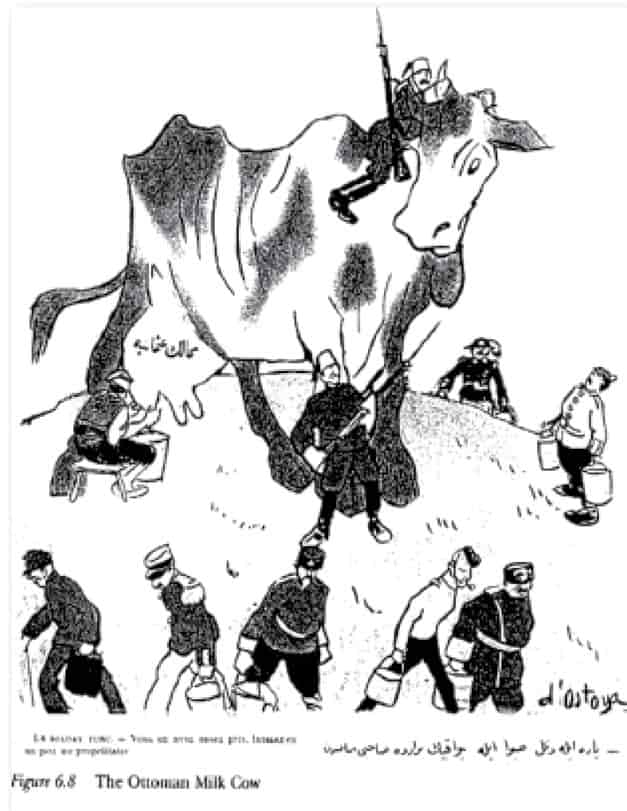
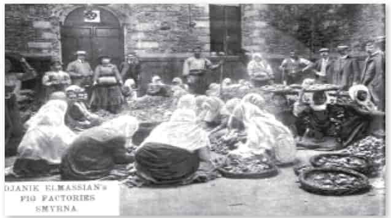
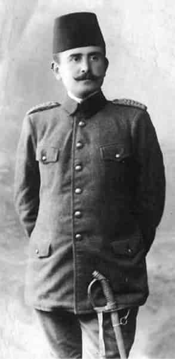
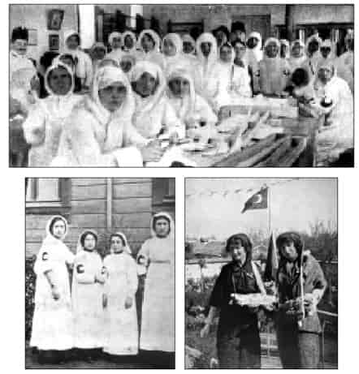
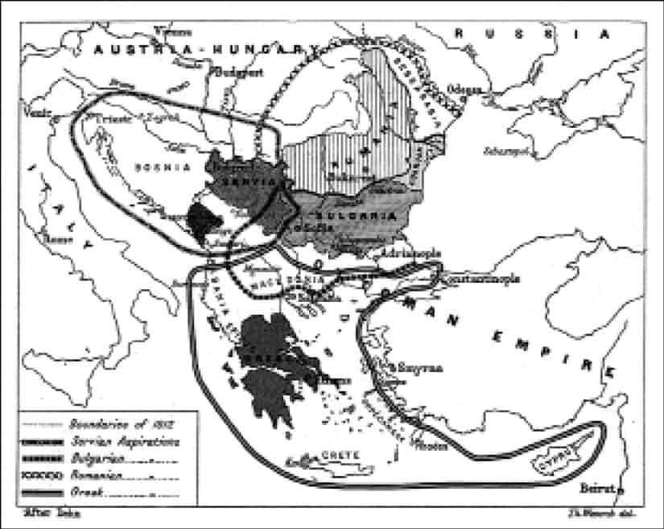
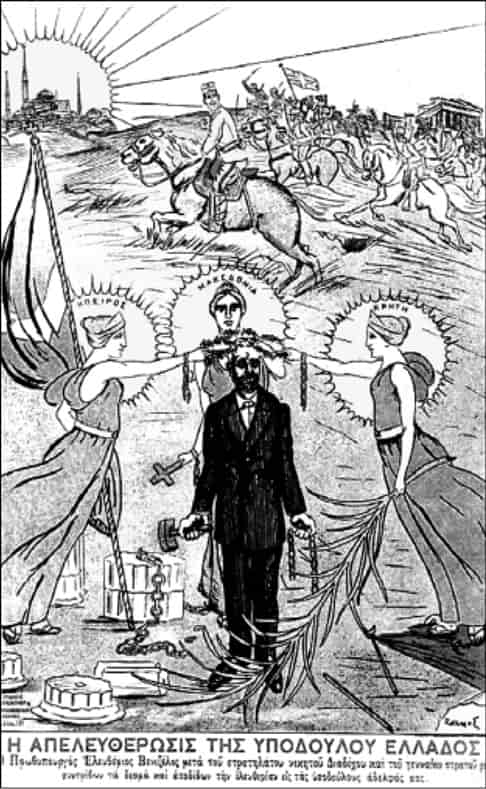
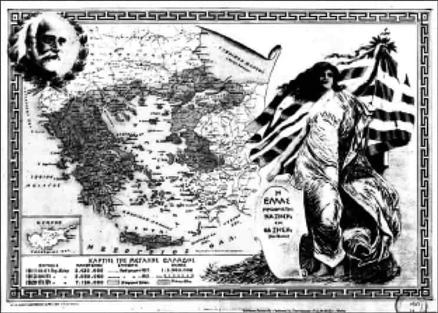
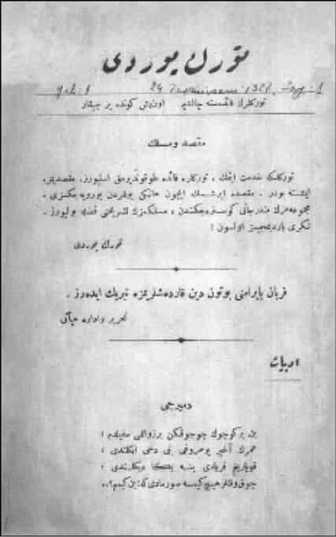

9

Ve Türk milliyetçiliği...
Modernleşmenin yani okulun, gazetenin, ticaret yoluyla sosyal hareketliliğin gelişmesinden önceki çağlarda, değişik kimliklerden halkları yönetmek, Osmanlı’nın avantajını oluşturur; Osmanlı’nın medeni bir mirasıdır. Fakat etnik ve dini kimlikler 19. yüzyılın başından itibaren milliyetçiliğe dönüşmeye başladı. Önceki dönemlerde görülmeyen okulun, gazetenin ve “halk” fikrinin gelişmesi aynı dili konuşan, aynı hafızaya sahip insanlarda kendi devletlerini kurması düşüncesine yol açtı. Sırp isyanı, Yunan isyanı, Bulgar isyanı, Arnavut isyanı... Bu toplumların ve devletlerin milliyetçi hedefler etrafında enerjik, militan, hatta saldırgan (irredantist) bir dinamizm kazandığını gördük. Böyle bir çağda Osmanlı içinden çözülüyordu.
Temeldeki bu sosyolojik dinamiklerin Balkan Savaşı’nda doğurduğu sonuçları gördük: Balkan halkları için zafer ve toprak kazanımları, homojen ulus haline geliş... “Tebaa-i Osmaniye”nin uluslara bölünmesi, çokuluslu Osmanlı İmparatorluğu’nun acı mağlubiyetlerle dağılması...
Osmanlı’nın Hıristiyan vatandaşlarındaki ayrılıkçı, milliyetçi duygular çok daha erken geliştiği gibi, çok daha güçlüydü. Meşrutiyet’in demokrasi ve eşitlik vaadi, askerlik dahil bütün kamu görevlerinin Hıristiyanlara açılması, Meclis’te temsil edilmeleri, dernek ve parti kurma özgürlüklerinin gelişmesi onları milliyetçiliklerinden vazgeçirmemişti. Hatta Meşrutiyet’in özgürlük ortamında talep çıtaları yükselmiş, heyecanları artmıştı. Osmanlı toplumundaki duygusal kopuşlar, bölünmeler derinleşmişti.
Tarihçi Erik Zürcher, Rumların, Makedonların ve Ermenilerin, Meşrutiyet’ten sonra eşitlik uğruna milliyetçi iddialarından vazgeçmediklerini belirtir. Dahası, Arnavut ve Arapların da kendi ayrılıkçı hareketlerini geliştirdiklerini belirtir. Meşrutiyet’in umulan birleştirici sonucu vermemesi, Türkleri de Osmanlıcılık ve İslamcılıktan Türklük fikrine yöneltiyordu.1
Çöken imparatorluğun altında kalıp ezilmek, Rumeli’yi, ardından İstanbul ve Batı Anadolu’yu da kaybetmek endişesinin yol açtığı bir kendini fark ediş, bir başının çaresine bakma duygusu olarak doğdu Türk milliyetçiliği...
Ünlü romancımız Necati Cumalı Viran Dağlar adlı romanında Makedonya’daki değişimi ve Türklerde oluşan endişeyi Halit’in ağzından şöyle anlatır:
Makedonya yaşlılardan dinlediğiniz, çocukluğumuzdan bildiğimiz Makedonya değil! O Makedonya Makedonyalılarındı. Hıristiyan’ı, Müslüman’ı, Rum’u, Bulgar’ı, Sırp’ı, Arnavut’u, Osmanlı’sı Makedonyalıyım demeyi birbirine çok görmezdi. Şimdi bu din ayrılığı çekişmesi, ulusçuluk kavgaları çıktı çıkalı Makedonya’da hava karardı; dostluk, kardeşlik, komşuluk hatırı kalktı, herkes birbirine girdi. Bulgar Rum’u, Rum Bulgar’ı, Sırp Arnavut’u, sonunda hepsi bir olup Türk’ü, Müslüman’ı vuruyor, öldürüyor. Sonu ne bunun?
Necati Cumalı, böyle etnik ayrışmaların, duygusal kopuşların ortaya çıktığı Makedonya’da Goriçkalı Zülfikâr Bey de Türk kimliğinin güçlenmesini de şöyle anlatır:
Rumlar, Bulgarlar, Sırplar arasında yaygınlaşan ulusçuluk tutkusunun tanığıydı. Çevresindeki Rumlar, Bulgarlar, Sırplar “Ben Yunan’ım, ben Bulgar’ım, ben Sırp’ım” dedikçe; “Ben Türk’üm, Osmanlı’yım” diyordu karşısındakilere. Madem onlar kendilerini Rum, Bulgar, Sırp diye ayrı tutuyorlar, kendisinin de “Ben Türk’üm” demesi gerektiğini, en azından bir onur sorunu olarak benimsemişti.2
Daha eğitimli, dünyanın daha çok farkında olan orduda da milliyetçilik tartışmaları başlamıştır ve Türklük fikri orduda daha hızla gelişecektir.
Milliyetçilikler ve Osmanlı ordusu
Mekteb-i Harbiye’de Arap ve Arnavutlar, Türk arkadaşlarıyla daha 1900’lerin ilk yıllarında resmi dil tartışmaları yapmaya başlamışlardır.3
Gayrimüslimlerin konumu daha ciddi bir sorundur.
Osmanlı’da kamu görevleri Tanzimat’tan itibaren gayrimüslimlere açılmış, en çok Abdülhamid döneminde bilhassa Ermeniler devletin yüksek makamlarına getirilmişti.4 Fakat 1909 yılına kadar gayrimüslimler orduya alınmıyordu. Madem Meşrutiyet eşitlik ve birlik getirecekti, bu tarihten sonra orduya, Harbiye’ye, subay kadrolarına da alınmaya başladılar. Bunun tek sebebi Meşrutiyet’in bu liberal fikirleri değildi. Türkler, koca imparatorluğun büyük askeri yükünü sadece kendilerinin taşımasının ağır sonuçlarını artık görüyorlardı.
İzleyen sayfada Cemil Cem’in 1910 yılında Kalem dergisinde yayımlanan “inek” karikatürünü görüyorsunuz. İnek şeklinde resmedilen imparatorluğun bekçiliğini Türkler yapıyor fakat sütünü başkaları sağıyordu. İneğin sütünün Avrupalı emperyalist ekonomiler tarafından sürekli “emildiği” en önemli kanal kapitülasyonlardır. Diğer bir sebep, Türkler senelerce askerlik yaparken hem nüfus artışlarının az olması, hem askere gitmeyip ticaretle uğraşan gayrimüslimlerin ekonomik hayatta daha fazla güçlenmeleridir.
Osmanlı’da ticaret ve sanayi, kendi milliyetçiliklerine gittikçe daha çok bağlanan gayrimüslim unsurların ve çok defa onlarla ticari ortaklık yapan yabancı şirketlerin eline geçmişti, yüzde 80.4’ü onların, kalan yüzde 19.6’sı Müslümanların elindeydi. Türk milliyetçiliğinin doğuş sebeplerinden biri bu “inek” durumuna tepki olacaktır.5
Yıllarca süren askerlik görevi yüzünden, mesela 1842’den 1909’a kadar altmış yedi yılda Edirne’de Müslüman nüfusu yüzde 10 arttığı halde, askerlik yapmayıp cizye vergisi ödeyen Rumların nüfusu yüzde 20 artmıştı.6 İngiltere’nin Selanik Konsolosu Charles Calvert’in de belirttiği gibi, yıllarca süren askerlik yüzünden Türkler fakir kalıyor, hatta Müslüman tüccar ve zanaatkârlar askerden döndüklerinde yerlerini Hıristiyanların almış olduğunu görüyorlardı.7

Fransız tarihçi François Georgeon, 19. yüzyılda Osmanlı İmparatorluğu’nda Hıristiyanların “altın çağ” yaşadıklarını anlatır. Gayrimüslimlerde nüfus artışının Müslümanlardan fazla olduğunu belirten Georgeon, Osmanlı’daki gayrimüslimlerin Rusya’dakilerle kıyaslanamayacak özgürlüklere sahip olduklarını ve Avrupa ekonomisiyle ilişkili olarak iktisaden hızla güçlendiklerini anlatır:

İzmir’de Canik Elmasyan’ın incir kurutma fabrikası. Patronlar ve ırgatlar.
Fotoğraf: Toplumsal Tarih, Ocak 2013.
“Yahudi, Rum ve Ermeni cemaatleri 1900’e doğru serpilip gelişir. Hayırseverlik kurumlarının oluşturduğu ağdaki gelişmeler sayesinde etkili bir tıbbî ve eğitimsel çerçeve sağlar, yoksulluğa karşı mücadele ederler, okuma yazma seferberliği dev adımlarla ilerler. Hayırseverlik eserleri, yardım kurumları, yetimhaneler çoğalır. Avrupa’nın imparatorluk içindeki ekonomik yatırımlarının artmasında da yararlanırlar: Şirketler, bankalar, sigorta kumpanyaları personellerini öncelikle gayrimüslimlerden seçerler. Avrupa’nın Osmanlı İmparatorluğu içindeki ekonomik ve kültürel genişlemesi Yahudilerin, Rumların ve Ermenilerin toplumsal tırmanışıyla kol kola yürür. 19. yüzyılın sonu ve 20. yüzyılın başı, bu yeni burjuvazi için tam bir altın çağdır. Daha o zamandan gayrimüslimlerin kentlerdeki oranı artmıştır. Gerçekten de imparatorluğun toplam nüfusunun sadece beşte birini oluştururken kent nüfusunun üçte biri onlara aittir. Ama tüccarlar, işadamları, girişimciler hep onların arasından çıkar…”
...
“Rumlar ve Ermeniler artık dış ticarette olduğu kadar bankacılık ve sanayi faaliyetlerinde de egemen durumdadırlar. Osmanlı İmparatorluğu’nda ilk kez 1913-1915’te yapılan sanayi sayımı da bu eğilimi doğrulayacaktır. Sayımı yapılan sanayi kuruluşlarına yatırılmış sermayenin % 50’si Rumların elindedir, % 20’si Ermenilere, % 5’i Yahudilere aittir. Geriye kalanlar yabancılar (% 10) ile Müslümanlar (% 15) arasında paylaşılmıştır. Demek ki Birinci Dünya Savaşı’na kadar sanayi sermayesinin dörtte üçü gayrimüslimlerin elindedir.”
François Georgeon, Sultan Abdülhamid, İletişim Yayınları, İstanbul 2006, s. 444-446.
Askerliği sadece Müslümanların yapmasının onları nüfusça ve iktisatça büyük zarara uğrattığını, gayrimüslim vatandaşların da askere alınması gerektiğini ilk defa savunan, Tanzimat’ın büyük devlet adamlarından Âli Paşa’dır. Uzun bir gerekçe yazarak bunu vasiyet olarak Sultan Abdülaziz’e sunmuştu.8
Abdülhamid de, gayrimüslimlerin ticaret ve ekonomide Müslümanlardan ileri olmasından yakındığı gibi, “askerlik ve sair [sebepler] İslamların terakkisine mâni oldu” diye konuşmuştur. Abdülhamid, sekiz yıl olan askerlik süresini kendisinin üç yıla indirdiğini, asayiş (isyan) olayları sebebiyle daha aşağıya çekemediğini söylemiştir.9
Fakat “peygamber ocağı”na gayrimüslim asker ve subay almanın yapısal ve ruhî zorlukları vardı. Gayrimüslimlerin subay ve er olarak orduya kabulü, Meşrutiyet döneminde gerçekleşti ve sorunlarını da birlikte getirdi.
Patrikhane Hıristiyanlara askerlik mükellefiyetinin getirilmesine şiddetle karşı çıktı, dinlere göre ayrı ayrı ordu birliklerinin kurulmasını istedi! Parlamentodaki Rum kökenli Osmanlı milletvekilleri bunu destekledi, Rumlar bunun için mitingler, yürüyüşler yaptılar!10
Bir devlette iki ayrı ordu olabilir miydi?!
Meşrutiyet’ten önce de Abdülhamid Hıristiyan vatandaşları, Müslümanlar gibi askere almayı düşündüğünü Patrik Yuvakim Efendi’ye açmış, Yuvakim o zaman da kültür ve gelenek farklarını hatırlatarak “Bir arada olamazlar, ayrı bölükler teşkil edilirse olur” diye cevap vermişti.11
Meşrutiyet’e inanan Genç Türkler “Hürriyet’in İlanı” ile Osmanlı birliğinin sağlanacağını, bir arada yaşama arzusunun güçleneceğini düşünmüşlerdi, halbuki getirilen özgürlükler ayrılıkçı milliyetçilikler için kullanıldı.
Orduya alınmaya en çok itirazın Patrikhane ve Rumlardan gelmesi önemlidir; en fazla “kopmuş”, kendi milliyetçiliğine (Megali İdea) en fazla bağlanmış toplum onlardı.
Öbür yanda, gayrimüslimlerin orduya kabulü yüzünden, ordudaki geleneksel İslami heyecan da zayıflamıştı. Leon Troçki gözlemlerini şöyle anlatır:
Hıristiyanların orduya alınması, İslam’ın devlet ile ordu arasında tek bağ olduğu şeklindeki inancı ister istemez yok etti, böylece Müslüman askerin zihninde en derin boşluğu yaratmış oldu.
Troçki “gâvur” diye muamele görmenin Hıristiyan askerlerde yarattığı huzursuzluğu da anlatır.12
Askere alsanız bir türlü, almasanız bir türlü! Milliyetçilik çağında çokuluslu imparatorluğun yaşadığı açmazlar orduda da ortaya çıkmıştı.
Trakya cephesinde 3. Ordu Kumandanı olan Mahmut Muhtar Paşa “Rum askerlerden birçoğunun ilk gerileme sırasında düşman tarafına geçtiği şüphesizdir. İkinci savaşta Hıristiyan erlerden kimse bulunmamıştır” diye yazar.13
Trakya’daki savaşlara kurmay binbaşı olarak katılan Hafız Hakkı Paşa da Hıristiyan askerlerin bulunmasının “orduda itimat hissinin azalmasına” yol açtığını, bunun “müthiş” bir olumsuz etki yaptığını belirtir. Paşa, orduda gaye birliği yaratılmasının bir zorunluluk olduğunu vurgular. Harp zamanında ordusuyla savaşılan düşman devletin halkıyla aynı “ırk”a, yani etnik kimliğe sahip Hıristiyanların o cephede kullanılmaması gerektiğini yazar.14
Amerikalı tarihçi Richard Hall’a Balkan Savaşı’nda Osmanlı ordusundaki gayrimüslim askerlerin orduya sadakatleri ne düzeydeydi, diye sordum, şu cevabı verdi:
Richard Hall: Sadakat yoktu. Sadakatleri kesinlikle öteki tarafaydı.
Bu tecrübe yaşandığı için, Birinci Dünya Savaşı sırasında gayrimüslim askerler cepheye sevk edilmeyecek, “amele taburları” olarak cephe gerisinde istihdam edileceklerdir. Genç nüfus cepheye gönderildiği için boş kalan tarlalarda görevlendirilen amele taburlarının çalışmasıyla arpa ve buğday üretimi 3.5 kat artacaktır.15
Aram Andonyan, Balkan Harbi’nde Osmanlı ordusunun zaaf noktalarını anlatırken şunları yazıyor:
Ordunun yüzde 25’ini oluşturan gayrimüslimlere, Ermeniler ve Yahudiler hariç, fazla bel bağlanamazdı; ne Rum’u, ne Bulgar’ı, ne de Sırp’ı dövüşemezdi soydaşlarına karşı. Daha birçok maddi ve psikolojik etkenler Osmanlı ordusunun fiili gücünü azaltıyordu. Balkan orduları ise hem hazırlıklıydılar, hem de milli ülküyle güçlenmişlerdi...16
Balkan Savaşı’ndaki bozgunlarda ve maruz kalınan korkunç acılarda yaşanan bu tecrübelerde milli şuur, milli ideal gibi değerlerin önemini Türkler de gördüler. İdealsizliğin acısını çektiler, homojen ulus fikrini artık onlar da düşünmeye başladılar.
Çokuluslu Osmanlı İmparatorluğu’nda orduda ortaya çıkan dil sorunlarını ve milli ideal arayışını, Yüzbaşı Ömer Seyfettin’in savaş sırasındaki şu notlarında görmek mümkün:
18 Ekim 1912:
“Askerin hepsi acemi. Hatta silah doldurmasını bilmiyorlar. İhtiyatların çoğu da Pomak. Bir kelime Türkçe bilmiyorlar. Onbaşıların ve çavuşların içinde bir vücut, parlak ve açık bir göz göremiyorum...
30 Ekim 1912:
Bizde bir ideal, bir vatan hissi, nihayet bir lisan yok...
Bölüğün yarısından ziyadesi Türkçe bilmiyor. Tabur Babil Kulesi gibi. Ne alanın satandan, ne satanın alandan haberi var.17
Halbuki homojen Balkan ordularında “tek bir komuta dili olması orduları birleştirici bir faktördü”18 ve savaşta önemli bir avantajdı.
İdealsizlik bunalımı
Osmanlı ordusundaki bu dil ve etnik sorunlardan biri, Müslüman Arnavutların da milliyetçiliğe yönelmesidir. Abdülhamid döneminde kendini gösteren Arnavut milliyetçiliği Başkim Kulüpleri adıyla örgütlenmiştir. İlk talepleri Arnavut dilinde eğitim ve Arnavut kültürünün gelişmesidir. Zamanla siyasallaşarak ayrılıkçı ve ayaklanma yanlısı bir örgüt olmuştur. Geçen bölümlerde gördüğümüz İsmail Kemal Vlora ve Esat Toptani, Başkim liderleridir.19
Balkan Harbi’ne kurmay yarbay olarak katılan Fevzi Çakmak, Arnavut çoğunluklu şehirlerdeki isyanları ve ordunun durumunu şöyle anlatır:
1912 Nisan sonlarına doğru Arnavutluk’ta isyan çıkmış, mayıs ve haziran aylarında İpek, Yakova ve Priştine’de karışıklıklar sürerken, isyanı bastırmak için İstanbul’dan gelen 1. Tümen de isyancılarla birleşmişti. Millet Meclisi’nde “İtilafçılık”, orduda “Halaskârlık”, Arnavutluk’ta “Başkimcilik” el ele yürüyordu.20
Böyle bir orduda, böyle bir toplumda ideal mi kalır?
Yazar Yakup Kadri Karaosmanoğlu, Balkan Savaşı dönemini konu edinen Hüküm Gecesi adlı romanında, bu idealsizliği, acılar çekerek yazdığı belli olan şu satırlarla anlatır:
İdealsizlik, idealsizlik! İstediğiniz kadar rejim değiştirin. İstediğiniz kadar adam getirip götürün, bu gemiyi yürütemezsiniz, çünkü kazanı yanmıyor. Çünkü bu merkezî hararetten mahrum bir cisimdir. İşte elinden ‘Kızıl Elma”sını aldığımız günden beri Türk ordusunu hali!21
İdealsizlik denilen ruh halini, Türk toplumunun ve Osmanlı Devleti’nin depresyon hali olarak anlayabiliriz. Bu, koca bir Balkan Harbi’ne yol açmıştı, bir yıl sonra Cihan Harbi patlayacaktı!
Mutlakıyet, meşrutiyet, gelip giden hükümetler, askeri darbeler derde deva olmamıştı; hürriyet de diktatörlük de çözüm getirememişti. Demek ki, rejim meselesi değildi, hükümet meselesi de değildi.
Bu idealsizlik, bu depresyon, bu ruhi çöküntü, yüz binlerin kan ve gözyaşlarıyla yaşanmış askeri bozgunlar, Türklerde milliyetçilik duygusunun gelişmesine yol açtı. Türk milleti kavramı artık bir siyasi ideal olarak hissedilmeye başlanmıştı. Bu eğilim Balkan Savaşı’ndan önce Makedonya’da Bulgar, Rum ve Sırp komitalarıyla çarpışan genç subaylarda ve bazı aydınlarda ortaya çıktı ilk önce... Balkan Savaşı’nın hemen ardından güçlendi.

Yüzbaşı Kâzım Karabekir.
Ben bir Türk’üm / Dinim cinsim uludur
Çokuluslu imparatorlukta bütün unsurları birleştirmesi umulan Osmanlılık fikri etnik milliyetçilikler karşısında başarısızlığa uğradıkça, özellikle Makedonya’daki genç subaylarda Türklük fikrinin nasıl uyandığını Kâzım Karabekir’in anılarında görmek mümkündür. Harbiye’deki Arap ve Arnavut öğrencilerde milliyetçi fikirler ortaya çıkmaya başlamıştı. Makedonya Rumları ve Bulgarları ikide bir milli marşlarını, milliyetçi türküleri topluca söylüyorlardı. Bunlar karşısında Yüzbaşı Kâzım Karabekir Türk olduklarını ifade eden bir marş ihtiyacı duyuyor. Yok böyle bir marş, sultanların tahta çıkışı dolayısıyla yapılmış marşlar var sadece, Hamidiye, Reşadiye marşları gibi...
Şöyle yazıyor Karabekir:
Millet asrındayız. Her millet gibi biz Türkler de bir varlık yapmalıyız... Bir Türk marşının her akşam kışlanın duvarlarında yankılanması ve subayların, erlerin bir ağızdan bunu okuması, bu ilk adım bir parola olacaktı...
Bu düşüncelerle bir marş yapmak istedim. Aklıma Mehmet Emin Bey’in “Ben bir Türk’üm, dinim cinsim uludur / İnsan olan vatanının kuludur” diye Yunan harbi sırasında yazdığı bir türkü geldi...
Karabekir, 1897 Yunan Savaşı sırasında Mehmet Emin Yurdakul’un yazdığı bu şiiri kendisi besteliyor ve her akşam kışlada askerleri topluyor, alay bandosuna çaldırıyor.22
Karabekir’in anlattığı bu olayın yılı, 1904’tür.
Balkan Savaşı’nda yaşananlar ve göçlerle Türk nüfus yoğunluğunun büsbütün artması Türklük duygusunun yaygınlaşmasına ve güçlenmesine yol açacaktır.
Türklük düşüncesi dil ve edebiyat alanında 1800’lü yılların ilk çeyreğine, Ahmet Vefik ve Süleyman Paşalara kadar uzanır. Siyasi fikir olarak Türkçülük ise İttihat ve Terakki akımı içinde, 1902’den itibaren görülmeye başlar. Mısır’da yayımlanan Şûra-yı Ümmet ve Türk adlı gazeteler siyasi Türkçülük fikrine bağlıdır.23 Fakat Türklük fikrinin uygulamada İttihat ve Terakki’nin devlet politikası haline gelmesi Balkan Savaşı’ndan sonradır.
“Duygusal kopuş”
İstanbul on binlerce yaralı ve hasta askerle, yoksul ve bitkin göçmen kafileleriyle dolup taşarken, bu yürekler yırtan ıstırabın ruhlarda bir isyan yaratmaması mümkün müydü? Yakup Kadri Karaosmanoğlu şöyle anlatır:
Çatalca’da atılan toplar İstanbul’da duyuluyor. Hatta Rumlar bile İstanbul’un Bulgar eline düşmesinden titriyor ve gazeteleri bizim gazetelerle birlikte Türk ordusunun birtakım asılsız başarılarından bahsediyordu.
Lakin her gece akın akın gelen başları, kolları ve bacakları, beyaz sargılı yaralıları ne yapmalı? Her gece, her gece Sirkeci Garı’ndan Şişli’ye, Kabataş’a, Fatih’e ve Topkapı’ya doğru uzanan araba zincirleri, şimdiden birer mumya haline gelmiş bu beyaz sargılı insanları taşımakla bitiremiyordu.
Bir an geldi ki İstanbul sağlam adamlardan çok, bu yaralılarla, bu sakatlarla, bu koleralılarla doldu. Evet, koleralılar... Çünkü bir yandan Bulgar şarapnelleri, öbür yandan kolera basilleri el ele vermiş, Türk ordusunu çifte orak gibi biçmekteydi. Bu biçilen etlerle kemikler kâh bir okul koridorunda, kâh bir cami avlusunda titrek yığılışlar halindeydiler. Bunlardan ne bir feryat, ne bir inilti çıkıyordu...24
Hatırlayacaksınız, gazeteciler Stephane Lauzanne ve Wilhelm Feldman, böylesine acılar içindeki İstanbul’da gayrimüslimlerin kayıtsızlığını, eğlence hayatlarının devam ettiğini yazmış, eleştirmişlerdi... Müslüman İstanbul, Yakup Kadri’nin satırlarındaki bu acıyı yüreğinde hissediyordu.
Duygusal kopuş böyle bir şey olsa gerek!
Osmanlı kadını, hele de okumuş, dünyanın farkına varmış, milli hisleri uyanmış Osmanlı kadını bu acıyı hissetmeyebilir miydi?! Kadınlar peçelerini çıkarıp gönüllü hemşire ve hastabakıcı olarak yaralı askerlere yardıma koştular. Yoksul göçmenler için aş ocakları açıp giyecek ve para topladılar.
Yeni Osmanlı kadını
Bu yeni Osmanlı kadınlığının simgesi Halide Edip, şu hüzünlü satırlarında hem kadınların faaliyetini, hem uyanan millet ve vatan duygularını anlatır:
Her sabah Fatih’ten yürüyerek Sultanahmet civarındaki bu hastaneye geliyor ve akşamları geç vakitlere kadar burada kalıyordum. Issız ve çamurlu sokakların köşelerinde duvarlara dayanarak yürüyen yaralı asker ve tir tir titreyen muhacirlerden başka kimseyi göremiyordum. Milletime ve memleketime herhangi bir vaziyet içinde kalbimdeki muhabbetin hakiki mahiyetini o günlerde anladım...
Arkamda Haminnemin bol çarşafı, hastaneye gelirken tek başıma Sultanahmet Meydanı’nda durur, içimde sonsuz bir hüzünle minarelere bakar, bir yabancı ordusunun bu diyara girmesi ihtimali kalbimde öyle bir acı uyandırırdı ki, yüzüstü yatıp taşları öpmek isterdim. Evet, beni bu yerden hiçbir yabancı kuvvet ve tehlike ayıramazdı. Bu toprakların mukadderatını daima paylaştık, paylaşacağız.25
1919’da işgale karşı yapılan mitinglerde de başı çeken Halide Edip’in 1912 acılarını anlatan bu satırlarındaki “millet, memleket, bu toprakların mukadderatı” kavramlarına dikkat ediniz; bunlar “millet” bilincinin ifadeleridir... Minarelere bakarken içinde hissettiği sonsuz hüzne, yabancı orduların buralara da gelmesi endişesine, yüzüstü yatıp taşları öpme arzusuna dikkat ediniz; bunlar “vatan” bilincinin ifadeleridir.
Balkan Savaşı sırasında tarihimizde ilk defa kadınlar Darülfünun’da, üniversitede konferans düzenlediler. Halide Edip, Fatma Aliye, Nigâr ve İhsan Raif hanımların düzenlediği o bu konferansa o zamanki İstanbul’da 5-6 bin kişi katıldı; sağlık ve yardım hizmetleri organize edildi. Hastanelerde, hanlarda, konaklarda, camilerde yaralı Mehmetçiklerin yarasını saranlar, artık bu hemşireler, kız kardeşler, bu kadınlardır. Türk tarihindeki Cedit (Yenileşme) hareketinin beşiği olan Kazan’dan gelen gönüllü doktor ve hemşireleri özellikle zikretmek gerekir.26

Balkan Savaşı’nda Osmanlı kadını evinden çıktı. Hemşire olarak yaralılara baktı, okumuş
Osmanlı kadınları Kızılay’a yardım kampanyaları açtı. Milliyetçilik ve modernleşme el ele.
O zaman “Hilal-i Ahmer” denilen Kızılay büyük canlanma gösterdi. Kızılay’ın çalışmaları ve toplumdan gördüğü destek, sadece insani ve sosyal yardım fikrinin değil, uyanan milli ruhun bir kurumudur aynı zamanda.27
Azerbaycan’dan, Orta Asya’dan; Hind (Pakistan dahil) ve Mısır’dan gönüllü sağlık ekipleri geldi, seyyar hastaneler açıp yaralı Türk kardeşlerine hizmet sundular.28
İdealsizlikten idealizme
Yüzbaşı Karabekir’in anlattıkları, Halide Edip Hanım ve arkadaşlarının yaptıkları, idealsizlik ve depresyon içinde mecalsiz düşmüş bir toplumda yeni bir heyecanın, yeni bir idealin parıltılarıdır. Çanakkale ve Sakarya’da zafer güneşlerine dönüşecektir Balkan Harbi’nin karanlığında ışıldayan bu pırıltılar.
Zafer Toprak: Balkan Harbi aslında Osmanlı’da bir tür “içtimaî inkılap” yani toplumsal devrim diye nitelendirebileceğimiz bir dönüşümü gündeme getirmiştir. Her ne kadar 1908 ile birlikte Türkiye farklı bir yörüngeye girmişse de, kadın hareketinde, gençlik hareketinde, çocuk algılayışında veya toplumsallaşmada Balkan Harbi’nin çok önemli bir rolü vardır. Gerçekten daha öncekilere oranla çocuk dergilerine baktığımız vakit bu dergiler artık son derece paramiliter bir söylemle yayımlanmaya başlanmıştır. Bir vatan tutkusu, vatan özlemi, bütün bunlar işlenmeye başlanmıştır bu dergilerde. Keza kadın hareketine baktığımız vakit, kadın dernekleri artık milliyetçiliği ön planda tutmaya başlamışlardır... Düzenlenen birtakım konferanslara bakıyoruz, artık o konferanslar kadın sorunundan çok, ülkenin nasıl düzlüğe çıkarılacağı, ülkenin, vatanın nasıl savunulacağı bu tür konuları gündeme getiren dergiler haline gelmiştir. Gençlik de keza öyle. Unutmayalım ki, o tarihlerde Güç dernekleri, Genç dernekleri, Gürbüz dernekleri, Keşşaf (izci) dernekleri, bütün bu dernekler aslında daha çocuk yaşta diyelim insanları belli bir sosyalizasyona tabi tutma girişimleridir.
Topluma yavaş yavaş bir dinamizm gelmekte, milliyetçilik Osmanlı toplumunda da bir ideal hissi, bir hareketlenme yaratmaktadır. Bu dönemde giderek sihirli bir dokunuş etkisi yapan yepyeni bir kavram, “mefkûre”dir. İdeal’in, ülkü’nün karşılığı olarak Ziya Gökalp’in türettiği bir kavram... Bu fikir ve duygu etrafında kurulan derneklerden Türk Yurdu Cemiyeti’nin bu adla çıkardığı derginin yayın ilkeleri arasında yer alan şu madde dikkat çekicidir:
Osmanlı Türkleri arasında Türk milli şuurunun gelişmesine ve güçlenmesine ve idealsizlikten doğan tembellik ve kötümserliğin izalesine çok çalışacak ve ekseriya hiçbir şeye müstenid [dayalı] olmaksızın ortaya çıkan mübalağalı Garp [Batı] korkusundan bu milleti kurtarmaya elinden geldiği kadar çalışacaktır.29
İdealsizlik, uyuşukluk, tembellik gibi sosyal sorunlar milliyetçilik heyecanıyla aşılmak istenecek, böyle bir sosyal hareketlenme bilhassa Balkan Harbi’nin yarattığı şokla gelişecektir.
Enver’in 27 Mart 1913 tarihli mektubundaki şu satırlarda hem orduya hem toplumun hiç olmazsa şehirli kesimine gelmeye başlayan dinamizmi görmek mümkündür:
Şimdi orduda günde en az 9 saat çalışıyorum. Çünkü daha şimdiden istikbal için çalışıyorum. Çalışmak, çalışmak, çalışmak, artık tek şiarımız bu. Bana yine geriye [Balkan hezimetine] değil ileriye bakmamı söylüyorsunuz. Evet, geriye bakmak istemiyoruz, daha doğrusu geriye bakmaya ihtiyacımız yok. Çünkü maziyi acılarla birlikte ruhumuzun derinliklerinde hissediyoruz ve bize ait olacak istikbale bakıyoruz sadece...30
1 Ocak 1914’te, rütbeleri yıldırım hızıyla aşarak mirliva (tuğgeneral) ve Harbiye Nazırı olan Enver Paşa’nın orduya getirdiği yeni ruhu ve disiplini İsmet İnönü şöyle anlatır:
Enver Paşa Balkan Harbi’ni yapan orduyu tümüyle değiştirmiş ve yeni bir ordu kurmuştur. Muharebede bulunan kumandanların hemen hepsini emekliye ayırmış ve orduda yeni albaylardan kolordu kumandanı, yarbaylardan tümen kumandanı ve yeni generallerden ordu kumandanı tayin edilmiştir... Yeni ordunun kurulmasında ve bu ordunun ümitsizlikten kurtulup yeni bir çalışma şevkine sahip olmasında Enver Paşa’nın kuvvetli disiplini âmil [etken] olmuştur.
Ordu böyle kuruldu ve ordunun yetiştirdiği kadro, bu ordunun yetiştirdiği kumandanlar Milli Mücadele’nin belkemiği olan insanlardır...
İnönü, askeri reformda Enver Paşa’nın “çok yakın arkadaşlarını, beraber ihtilalde bulunmuş kimseleri, küçük rütbeli olanlar da dahil, hepsini” ordudan çıkararak orduyu siyasetten temizlediğini belirtir.31 Gerçekten, bozgun ordusu iki yılda Çanakkale ordusu haline geldi.
Şükrü Hanioğlu: Hepsini Enver Paşa yaptı. Bunu İsmet İnönü bile hatıratında söylüyor. Balkan Harbi’nde rezil olan, kaçacak yer bulamayan, silahını bırakıp geri çekilen, ancak Çatalca’da durabilen Osmanlı ordusu, Birinci Dünya Harbi’nde birçok cephede, Çanakkale dahil, beklentilerin çok üzerinde savaştı ki Alman Genelkurmayı için çok hoş bir sürpriz oldu bu... Gerçekten Alman Genelkurmayı da Osmanlı ordusunun bu şekilde savaşacağını düşünmüyordu ama burada da tabii kendisini pek çok açıdan yermek mümkün, pek çok siyasetini eleştirmek mümkün, pek çok uygulamasını, askeri kararını eleştirmek mümkün ama ordu reformunun aslan payını da Enver Paşa’ya vermek lazım.
Bu yeni ruhun ekonomi sahasındaki karşılığı, Müslüman girişimci sınıf (burjuvazi) yetiştirmek üzere uygulanan “milli iktisat politikası”dır. Müslüman esnafı işadamına dönüştürmek için şirketleşme teşvik edildi, “milli sanayi” kurulmaya çalışıldı, ülkenin kanını emen kapitülasyonları kaldırmak için teşebbüsler yapıldı.32
Donanma Cemiyeti ve Türk milliyetçiliği
Bu toplumsal hareketlenmenin, milli bilinçlenmenin en önemli örneği, Donanma Cemiyeti’dir. Donanma-i Osmanî Muavenet-i Millîye Cemiyeti, yani Osmanlı Donanması Milli Yardım Cemiyeti adıyla 19 Temmuz 1909’da sivil bir dernek olarak kuruldu. Kurucuların başında Yağcızade Şefik Bey isminde bir Türk tüccar vardır. Rum tüccarların kendi milli davalarını çok aktif olarak desteklemelerinden esinlendikleri muhakkaktır.
Güçlenen Yunan donanmasına karşı Osmanlı donanmasına savaş gemileri almak için “iane” (bağış) kampanyası açıldı. Sadece İstanbul’da, sadece Osmanlı coğrafyasında değil, İslam dünyasında da adım adım yaygınlaştırılarak yürütüldü bu kampanya. Barbaros Hayreddin ve Turgut Reis adı verilen iki zırhlı, Balkan Harbi’nden önce alındı. Fakat bunlar 18 yaşında eski gemilerdir.
Donanma Cemiyeti’nin topladığı paralarla alınan gemilere verilen adlar, uyanan ruhu göstermek bakımdan dikkat çekicidir: Barbaros Hayreddin ve Turgut Reis’ten başta, Yadigâr-ı Millet, Muavenet-i Milliye, Numune-i Hamiyet ve Gayret-i Vataniye adları verildi gemilere.
Dönüm noktası, Yunanistan’ın Averof adlı savaş gemisini almasıdır. İtalya’da yapılan gemiyi İtalyan hükümeti almamış, satışa çıkarılmış, Osmanlı parayı tedarik edememiş, Yunanistan satın almıştı.
Daha önce gördüğümüz gibi, en hızlı Osmanlı savaş gemisi 16 mil sürat yapıyor, üç dakikada bir top atabiliyordu. Averof ise 22 mil sürat yapıyor, bir dakikada üç top atışı gerçekleştiriyordu. Yunanistan Balkan Harbi’ni Averof sayesinde kazanmıştı. Averof’u alamamak ve Rumeli’yi kaybetmek Osmanlılarda derin bir acı, buna karşılık, Averof’a sahip olmak Yunanlarda ve Osmanlı vatandaşı Rumlarda büyük bir milli gurur yarattı.
Daha önemlisi, bu savaş gemisini Yunanistan’ın satın almasına, 8 milyon drahmi bağışlayarak önayak olan Görice doğumlu Georgi Averof’un Osmanlı vatandaşı olması ve İstanbul’da bir Rum matbaasında basılan elifba (alfabe) kitabında “büyük vatanperver” olarak övülmesiydi.33 Bu durum, Osmanlı vatandaşı bütün zengin Rumların Yunanistan’ın silahlanmasını desteklediği kuşkusunu yarattı. Averof’tan daha büyük iki gemi için İngiltere’ye sipariş verildi, parası ödendi, gemiler inşa edildi. David Fromkin’e göre Sultan Osman “dünyanın en güçlü savaş gemisi”ydi. Ismarlanan iki gemi Birinci Dünya Savaşı’nın bile gidişatını etkileyebilecek güçte savaş gemileriydi.34 Fakat Birinci Dünya Savaşı arifesinde, Reşadiye ve Sultan Osman adını alacak bu gemilere İngiltere el koydu, Osmanlı’ya teslim etmedi! Sonra Göben ve Breslav macerası biliniyor.
Donanma kampanyasının yanında bir de “İslam boykotajı” denilen Rum mallarını boykot hareketi başladı. Müslümanların Rum esnaf ve tüccardan alışveriş yapmaması için aktif bir kampanya geliştirildi. Bu kampanyalar Türklerde milli bilinçlenmeyi yaygınlaştırdığı gibi çok sayıda “milli şirket” kurulmasını da sağladı.35
Patrikhane ve Meclis’teki Rum milletvekilleri Rum mallarına yapılan boykotu kırmak ve Rum göçünü önlemek için sert eylemler düzenledi. Boykotu kırmak için üreticiden yüksek fiyatla ürün alarak tek satıcı olma yolunu deneyen zengin Rum tüccarlar, Türklerin boykotunu kırmakta başarılı olamadı, boykotun etkisiyle iktisaden zarara uğrayan Rum esnaf Yunanistan’a göçmeye başladı.36
Daha önce Osmanlı toplumunda Müslümanların böyle kitlesel aktivizmi görülmemişti.
1913-1914’teki Müslüman Osmanlı toplumu Balkan Savaşı sırasında gördüğümüz yılgın ve çaresiz toplum değildir. Milli duygular onları da hareketlendirmiştir. Dönemin dürüst bir tanığı olan Aram Andonyan, bu değişimi şöyle anlatır:
Osmanlı orduları hem Makedonya hem Trakya savaş alanlarında arka arkaya yenilgiye uğrarken, devlet adamları mütevekkil bir kaderciliğe kendilerini kaptırmışlar, şaşkınlıktan ve boyun eğmekten başka bir şey yapamamışlardı. Bizzat Kâmil Paşa yabancı muhabirler aracılığıyla Avrupa’dan merhamet dilenirken gözyaşlarını onlardan gizlemesini bile başaramamıştı. Halk da devlet adamlarının davranışını örnek aldı, imparatorluğun belini kıran büyük felaket karşısında o da kaygısızlık ve tevekkülle baş eğdi. Adil olmak için şunu da itiraf etmek gerekir ki, İttihat ve Terakki, kendi örneğiyle, bu yüz kızartıcı tevekkül yerine, Türk halkına az çok enerji ve özgüven aşıladı. İktidara gelmekle savaş talihini değiştiremediyse de, hiç değilse, Osmanlı devletinin ve milletinin manevi ağırlığını artırabildi.37
Rumeli’yi kaybetmenin ve yüz binlerce Müslüman’a yapılan tehcir ve katliamın acısını elbette hiç kimse o zamanki nesiller kadar hissedemez. Yaralar çok taze, intikam duyguları canlıdır. Bu yönde yayınlar yapıldı, okul kitaplarına şiirler konuldu. Sadece Osmanlı değil Türk kavramı da sık sık kullanıldı.38
İntikam duygusundan daha önemlisi, Balkanlar gibi İstanbul ve Batı Anadolu’nun da kaybedilmesi endişesidir. Balkan Harbi’nde İstanbul kaç defa tehlike atlatmıştı! Ege adalarının Yunanistan’a verilmesi, Yunanistan’ın Batı Anadolu topraklarına göz koyması ve Osmanlı Rumlarının hareketlenmesi, bu endişeyi son derece artırdı elbette.
Megali İdea faktörü
1913’te artık Osmanlı’nın Sırbistan’la bir sınır ve azınlık problemi kalmamıştır. Arnavutluk kurulmuştur. Bulgaristan’la 29 Eylül 1913 tarihli İstanbul Antlaşması imzalanmış ve nüfus mübadelesi yapılarak karşılıklı etnik sorunlar önemli ölçüde halledildiği gibi, Birinci Dünya Savaşı’na giden yolda, iki ülke birbirine yaklaşmaktadır.
Yunanistan ise Balkan Harbi’nden yayılmacı amaçları güçlenmiş olarak çıkmıştır. 1914’te, Osmanlı’nın en büyük iki sorunu vardır: İngiltere destekli Yunanistan’ın Megali İdea politikasının İstanbul ve Batı Anadolu’ya yönelmesi... İngiltere ile müttefik hale gelmiş olan Rusya’nın Doğru Anadolu’da “Ermeni ıslahatı” adıyla yürüttüğü yayılmacı siyaset...
Balkanlar’ın ardından Batı Anadolu ile Doğu Anadolu’yu kaybedip İç Anadolu’ya “hapsedilmek” endişesi!
Balkan Harbi’ni araştıran Amerikan Carnegie Komisyonu tarafından, Balkan uluslarının “milli ihtiraslarını” gösteren harita bu bakımdan önemli bir belgedir. Carnegie Raporu’nun 38. sayfasında yer alan haritayı izleyen sayfamızda görüyorsunuz. Daha Balkan Harbi çıkmadan Yunanistan’ın siyasi hedefleri bu haritada gösterilmektedir:
Carnegie Komisyonu’nun bu haritası, Balkan Savaşı sırasındaki Yunan milliyetçiliğinin hedeflerini gösteriyor. Balkan Savaşı’nda, Trakya ve Kıbrıs hariç, Yunanistan, bu haritada hedefine ulaşmıştır.
Yunan belgelerinde de Balkan Harbi sırasında Megali İdea’nın hedefi olarak İstanbul ve Ayasofya’yı gösteren çok materyal mevcuttur. Daha 9 Kasım 1912’de Yunan ordusu Selanik’e girdiği tarihlerde, Yunan milliyetçi posterlerinde Yunan ordusu Ayasofya’ya yürüyordu.
Daha Balkan Harbi sürerken Trakya ve İstanbul’a göz koyan Venizelos liderliğindeki Yunan milliyetçiliği, Balkan Harbi’nde Osmanlı’nın zaafını ve kendisinin gücünü görünce bu hedefler arasına İzmir-Ayvalık arasındaki Batı Anadolu’ya da ekledi. Yunan tarihçi Pentzopoulos’un belirttiği gibi, Yunanistan’ın Batı Anadolu’yu alması, “büyük bir uluslararası kargaşayı provoke etmeden” başarılamazdı.39
Birinci Dünya Savaşı’nda Osmanlı’nın mağlup olması Yunanistan’a bu fırsatı verecek ve Yunan ordusu İzmir’e çıkarılacaktı. 1913’ten itibaren Venizelos, bir fırsat çıktığında harekete geçmek üzere Batı Anadolu’ya göz koydu, adaları buna göre tahkim etti, Batı Anadolu’daki Rum azınlığa Megali İdea’nın beşeri lojistiği olarak baktı.
Balkan Savaşı’nda işgal ettiği Ege adalarının 13 Şubat 1914’te Büyük Devletler tarafından Yunanistan’a verilmesiyle, 1914 yılı Türk-Yunan ilişkilerinin fevkalade gerginleştiği bir yıl oldu. Bu aynı zamanda dünya savaşının da patlak vereceği yıldır. Osmanlı’nın İngiltere’den satın alıp parasını verdiği, fakat teslim alamadığı Sultan Osman ve Reşadiye zırhlılarını engellemek için Venizelos Londra’ya koştu, aynı zamanda Amerika’dan pek büyük olmayan ve yaşlı Mississippi ve Idaho adlı iki gemiyi satın aldı.

Carnegie Komisyonu’nun 1913’teki araştırmalarına göre çizdiği bu harita Balkan
milliyetçiliklerinin genişlemeci hırslarını gösteriyor. Hepsinin Makedonya’yı almak istemesi ve
Yunanistan’ın Trakya, İstanbul ve Kıbrıs’ı hedefleri arasına alması dikkat çekici. Birinci Dünya
Savaşı’nda Osmanlı mağlup olunca bu hedefler arasına Batı Anadolu’yu da katacaklardır.
Ege’deki bu zırhlı gemi yarışı tabii adalar meselesiyle de yakından ilgilidir.
Bu sırada İngiltere, Alman-Avusturya cephesine karşı Bulgaristan’ı yanına çekmeye çalışmaktadır. İngiliz Dışişleri Bakanı Grey, 23 Ocak 1914 gibi erken bir tarihte, Yunanistan’a bir teklifte bulundu: Yunanistan, Balkan Harbi’nde aldığı Kavala’yı Bulgaristan’a verecek, böylece Bulgaristan ve Yunanistan İtilaf Devletleri’nin yanında yer alacak, bunun karşılığında “Küçük Asya sahillerinde en önemli topraklar” Yunanistan’a verilecektir!40
Yunan kralı biraz Almanya sempatizanıdır. Grey’in Batı Anadolu’yu vaat etmesiyle Megali İdea duyguları kabaran Venizelos, kralı ikna etmek için aynen şunları söyledi:
Eğer Bulgaristan’a vermemizi istedikleri şeylere razı olursak, Sir Edward Grey’in Asya’da Yunanistan’a vaat ettiği ödüller, o kadar büyük olabilir ki, Balkan Savaşı’ndan ikiye katlanmış olarak çıkan Yunanistan’a aynı derecede büyük, müreffeh bir Yunanistan daha eklenebilir.41
Balkanlar üzerine çok ayrıntılı bir eser yazmış olan Misha Glenny, Venizelos’un “Megali İdea” ve “Magna Graecia” (Büyük Yunanistan) kavramlarının ne anlama geldiğini, Venizelos’un şu sözlerini aktararak anlatıyor:
İki kıtada ve beş denizde Yunanistan!42
Venizelos Trakya’yı alarak Karadeniz ve Marmara’ya açılan, İzmir ve çevresini alarak Ege’nin iki yakasına, Asya’nın Batı sahillerine sahip olan, Akdeniz ve Adriyatik Denizi’nde uzun sahilleri bulunan bir Yunanistan peşindedir, mümkünse İstanbul’u da alarak!
Megali İdea’daki bu hedeflerin uygulamaya konulması zamana, şartlara, fırsatlara göre olacaktır.
İttihat ve Terakki hükümeti Rumeli’nin kaybedilmesi gibi, Trakya, Batı Anadolu ve hatta İstanbul’un da kaybedilmesi ihtimalinin derin endişesi içindedir; bu endişesinde haklıdır. Yunanistan Balkan Harbi’nde Ege adalarını almakla “Küçük Asya’nın batı kıyıları”na 2 mil kadar yaklaşmıştı! Yunanistan’a 95 mil, Anadolu’ya sadece 2 mil uzaklığı olan Limni adası bile Büyük Devletler tarafından Yunanistan’a verilmişti! Ortalama olarak, yüzlerce mil uzaktaki Yunanistan, Ege adalarını alarak “Anadolu’ya 2 millik mesafede bir tehdit” haline gelmiştir.43
Bu, Balkan faciasını yaşamış o zamanki nesiller için son derece yakıcı ve gerçek bir endişedir. Yunanistan’ın Makedonya Rumlarıyla kurduğu yoğun “komitacı” ilişkilerinin doğurduğu vahim sonuçlar o nesillerin gözleri önündedir. Kâmil Paşa 1912’deki Londra görüşmeleri sırasında, Anadolu’ya bu kadar yakın adaların Yunanistan’a verilmesi halinde, “Anadolu’daki Rumlarla Yunanlar arasında daimi kaçakçılık [silah vs] olacak ve burası ikinci bir Makedonya olacaktır” diyerek endişesini belirtmişti.44


İlk posterde 1912’de Selanik’i alan Yunan ordusu ufukta gözüken Ayasofya hedefine yürüyor.
İkinci posterde Birinci Dünya Savaşı sonunda Yunanistan Batı Anadolu, Marmara, İstanbul ve Trakya’yı almış gösteriliyor.
Her iki posterde de yüceltilen kişi Megali İdea’nın siyasi lideri Venizelos’tur.
Yine Yunan Dışişleri Bakanı Koromilas, daha 1913 Şubatı’nda adaların Yunanistan’a verilmesini savunurken, “Batı Anadolu’da sahilden 100 kilometre içeriye kadar olan ve Rumların yaşadığı bölge eninde sonunda Yunanistan’ın olacaktır” diye konuşmuştu. Alman büyükelçisi tarafından, bu bölgenin çoğunluğunun Türk olduğu hatırlatılarak onların nerede yaşayacakları sorulduğunda Koromilas şu cevabı vermişti:
Türklerin var olmaya devam etmesine gerek yok! 45
Yunanistan dışişleri bakanının bu sözünü Alman büyükelçi Berlin’e rapor ederken, “Yunanistan, Balkan Harbi’nden sonra gözünü Anadolu’ya çevirecek” diye yazmıştır.
Şimdi Batı Anadolu’nun Makedonyalaşması tehlikesi kapıya dayanmıştı. Tarihçi Hikmet Bayur, Londra Konferansı’nda Büyük Devletler tarafından Ege adalarının Yunanistan’a verilmesinin yarattığı endişeyi şöyle anlatır:
Yunanistan ne kadar güvence verirse versin, tabii idi ki, Yunanistan’a geçen adaların karşısında bulunan Anadolu kıyılarında ve daha içlerinde oturan kuvvetli ve kültürlü Rum azınlığı artık rahat durmayacak, hem İstanbul Patrikhanesi’nden hem de Yunanistan’dan teşvik görerek, bu teşvikler, önüne geçilemeyecek gidiş gelişlerle beslenecek ve Yunan Megali İdea’sının Anadolu kıtasında da gelişmesi kolaylaşmış olacaktı. Tabii olarak beklenilmesi gereken bu tehlikeden başka, yeni olaylar da ortaya çıkacaktır.46
Bayur’un bahsettiği ilk olay, Venizelos hükümetinin Mart 1914’te komitacı Temistoklis Sofulis’i Makedonya (Selanik) valiliğine atamasıdır. Sofulis, Sisam adasında 1900’lerin başında silahlı eylemleri başlatan bir Yunan komitacısıdır, Osmanlı döneminde terör eylemlerinden dolayı idama mahkûm olmuş, Yunanistan’a kaçmıştı. Venizelos tarafından Müslüman nüfusun yoğun olduğu bölgeye vali olarak atanan Sofulis Müslümanlara baskıyı artırdı, Osmanlı topraklarına yeniden “büyük kitleler halinde göç” başladı. Osmanlı’nın tepkisi, Aydın-Ayvalık arasındaki Rumları göçe zorlayarak onlardan boşalan yerlere, Yunanistan’dan tehcir edilen Türkleri yerleştirmektir.47
Hep kendisi tehcir yapan ve Avrupa’dan destek gören Yunanistan ilk defa Anadolu’dan Rum tehciri ile karşılaşmıştı. Yunanistan büyük öfkeye kapıldı, Avrupa’da girişimlerde bulundu, iki ülke arasındaki gerilim büsbütün tırmandı.
Yunan torpidoları Ege sahillerinde boy gösterdi, Sakız ve Midilli adalarından Anadolu sahillerine silah sevkıyatı yapıldığı ortaya çıktı. Batı Anadolu’da Rum çeteleri hareketlendi; Edremit’te bir Türk işadamının fabrikasını yakmaları gibi olaylar yaşandı. Trakya ve Batı Anadolu’da Türklerle Rumlar arasındaki toplumsal ilişkiler son derece gerginleşti, Yunanistan’dan Türkiye’ye Türk, Türkiye’den Yunanistan’a Rum göçü, zoraki göç arttı.48
Meclis reisi Halil Menteşe, “Batı Anadolu kıyılarında, bilhassa Ege adaları karşısındaki bölgede bulunan” Rumlardan yüz bin kadarının “burnu kanamadan” Yunanistan’a göç ettirildiğini, siyasi sorun olmaması için buna hükümetin ve valilerin karışmamış gözüktüğünü, “İttihat ve Terakki teşkilatı”nın bunu yaptığını anlatır. Göç, daha sonra İzmir bölgesine de sirayet etti, 200.000 Rum daha, Yunanistan’a 1914 yılı içinde gönderildi. Yerlerine Yunanistan’ın tehcir ettiği Türkler yerleştirildi.49
Yunanistan’la Birinci Balkan Savaşı’nın sona erdiği Kasım 1912’den, bu olayların geliştiği Mayıs 1913’e kadar altı ay içinde Yunanistan’ın tehcir ettiği Türk göçmen sayısı 163 bindir, bunların çoğu, Ege bölgesinin demografik güvenliği dikkate alınarak başta Aydın olmak üzere Ege şehirlerine yerleştirildiler.50
Tehcir, yani zorunlu göç karşılıklı olduğu halde, Yunan propagandası Batı kamuoyunda tek taraflı olarak Türklerin suçlanmasını sağladı. Türkler yine Hıristiyanlara zulmediyor, onlar da ne yapsınlar, Yunanistan’a sığınıyorlardı! Bulgarlarla yapılan nüfus mübadelesinde de Batı’ya göre Bulgarlar mazlum, Türkler zalimdi!
Bu noktada İstanbul’daki Fransız Büyükelçisi Bompard Nisan 1914’te Paris’e gönderdiği raporda, Yunanistan’ın Türklere yaptığı “zor ve zulümler”in üstünü diplomasiyle örtmeye çalıştığını belirterek şöyle yazıyordu:
Yunan hükümeti her ne derse desin, o şüphesiz, Yunan Makedonyası’nın Müslümanlardan boşaltılması için hiçbir şeyi ihmal etmemektedir; Fakat Osmanlı İmparatorluğu içindeki Rum ahali hakkında tatbik edilen aynı siyasete karşı protestoda bulunmaktan geri durmamıştır.
Bompard raporunda Türk ve Bulgar tehcirlerinin de karşılıklı olduğunu anlatır. Fakat bu raporu alan Fransız hükümeti, Türkiye’ye baskı yapmak için bir kruvazörü İzmir açıklarına gönderecek, Atina’ya ise en ufak bir uyarıda bile bulunmayacaktı.51
Yunanistan’ın Trakya ve Ege sahillerini ele geçirmek için politika izlediği ve silahlandığı açıktır. Trakya ve Batı Anadolu’yu ele geçirmek için buralardaki Rum nüfusunu dayanak olarak gördüğü de açıktır. Osmanlı Rumlarında etnik milliyetçilik yok muydu? Hem de nasıl vardı! Osmanlı Rumlarının Megali İdea’dan yana oldukları, Yunanistan’a sadakat duydukları kesindir. Michael Mann’ın belirttiği gibi, o dönemde:
Rumların sadakati Atina’yadır!52
Bu, 1908’den itibaren giderek göze batan bir gerçektir, 1919’da Yunan ordusu İzmir’e çıktığında da dramatik şekilde görülecektir.
Onun için Balkan Harbi’yle birlikte Osmanlı’nın içindeki etnik ve dinsel sorunlarla “dış çatışmalar arasında hassas bağlantılar” oluşmuş ve bu sorunlar “stratejik” hale gelmişti.53 Bunların başında Yunanistan’ın Batı Anadolu’yu da ele geçirmek istemesi ve bu siyasetin Rumlarla bağlantıları gelir.
Megali İdea: Bizans coğrafyası
1914’te Osmanlı hükümetinin Ege’den yaptığı Rum tehcirini ve uyanan Türk milliyetçiliğinin 1923’e kadar devam edecek olan Yunan-Rum karşıtlığını anlamak için, Megali İdea’yı ve Yunan milliyetçiliğinin oluşturduğu tehdidin çapını iyi görmek gerekir.
Aram Andonyan, Megali İdea’nın Arnavut ve Sırp topraklarına uzanan hedeflerinden başka, Türkiye’nin topraklarına yönelik hedeflerini şöyle anlatır:
Yunanlar Orfano, Kavala ve Çanakkale yoluyla, 300.000 Rum’un yaşadığı İstanbul’a varmayı düşünüyorlardı. Küçük Asya’nın Batı kıyılarını da Yunanlı sayıyor ve adalar bölgesinde Yunan kavminin çizmiş olduğu büyük daireyi Rodos ve Girit’le tamamlıyorlardı. Helenizm’in esas alanı budur, bu alanı Bizans İmparatorluğu’nun eski arazisiyle karşılaştırınca ilginç bir manzara ortaya çıkar.54
Andonyan bu satırları 1913 yılında yazdı, Birinci Dünya Savaşı daha ortada yokken, daha Yunan ordusu İzmir’e çıkmadan beş yıl önce! Yunanistan’ın Megali İdea denilen tarihi Bizans coğrafyasını “büyük ideal” olarak gördüğü, daha 1800’lü yılların ortalarından beri biliniyordu.55
Balkan Savaşı’nda adaları ele geçirmesiyle Anadolu’ya yönelen Yunan tehdidi eylemli hale geldi. Yunan tarihçi Dimitri Pentzopoulos, 2002 yılında yayımlanan kitabında Megali İdea’yı ve Rum-Yunan milliyetçiliğini şöyle anlatır:
Bu milliyetçi davranışı anlamak için Greklerin coşkulu bir şekilde kendilerini antik Atina’dan ziyade Bizans’a daha yakın hissettiklerini akıldan çıkarmamak lazımdır. Antik klasik dünyaya hayranlık duyulmuştur, saygı gösterilmiştir, fakat o dünya ölüdür. Diğer taraftan, Bizans İmparatorluğu ise bütün Greklerin kalbinde çok canlıdır ve 1453’ten beri Greklerin tepkilerini belirlemiştir. Türk işgali daima geçici sayıldı ve daha ilk çocukluk yaşlarından itibaren bütün kızlara ve erkeklere er veya geç bütün Greklerin tekrar birleşecekleri ve Konstantinopolis’in başkentliğinde tek millet haline gelecekleri öğretildi... Bugün bile bir kimse “polis”e yani “şehir”e gideceğini yahut babasının “şehir”de doğduğunu ya da “şehir”de çıkan yangında dükkânların harap olduğunu söylese herkes bilir ki kastedilen İstanbul’dur.56
Pentzopoulos’un bu satırları Osmanlı Rumlarının da duygu ve davranışlarını izah eder. Zaten Patrikhane ve Rum toplumunun siyasi liderleriyle yaşanan siyasi çatışmalar da bu gerçeğin kanıtlarıdır.
Birinci Dünya Savaşı’ndan önce yapılan Rum tehciri, etnik milliyetçiliklerin toprak (irredantizm) kavgası yaptığı o çağda, Türkiye için bir savunma politikasıdır.
Tarihçi Stefanos Yerasimos’un şu satırları çok nettir:
[Balkan savaşından sonra] Artık Osmanlı İmparatorluğu ile ortak sınırı kalmayan Sırbistan yeni toprak talepleri için yüzünü Avusturya’ya çevirirken Sisam ve öbür Ege adalarını topraklarına katan Yunanistan gözünü Anadolu kıyılarına, İzmir ve çevresine dikti. Yeni Yunan taleplerine karşı bir önlem olarak Türkler gerek Anadolu kıyılarında gerekse Doğu Trakya’da yaşayan Rumları sınır dışı ederek yerlerine Balkanlar’dan akın eden Müslüman göçmenleri yerleştirdiler. 1914 baharında Sırp-Avusturya savaşı kadar bir Türk-Yunan savaşının da eli kulağındaydı...57
Türkiye ile Yunanistan, aralarında bir savaşı önlemek için 1914 yazında karşılıklı nüfus değişimi yapmak için ortak komisyon kurdular ve çalışmalar başladı, fakat savaşın çıkmasıyla sonuçsuz kaldı.58 Yunanistan kendisine vaat edilen Batı Anadolu’yu almak için Dünya Savaşı’na girecek, Mondros Mütarekesi imzalanınca Averof’u İstanbul’a gönderecek, 14 Mayıs 1919’da İzmir’e asker çıkaracaktır... Yunan tarihçi Pentzopoulos, Sevr Antlaşması’nı “Megali İdea’nın başarısındaki en yüksek nokta ve beş asırlık Helen rüyasının gerçekleşmesi” olarak tanımlıyor.59
Biliyorsunuz Sevr’de Trakya’nın tamamı ile İzmir ve çevresi Yunanistan’a verilmişti! Neticede, Yunanlar için kendilerinin deyimiyle “büyük felaket” ya da “Küçük Asya Felaketi” oldu, 9 Eylül 1922’de Türk ordusunun İzmir’e girişiyle Megali İdea denize döküldü. 1914 yazında yapılamayan mübadele Lozan’da yapıldı. Ege bölgesi Makedonyalaşmaktan, kanlı etnik çatışmalardan bu şekilde kurtuldu.
Zafer Toprak haklıdır, Türkler için 1912’de başlayan savaş, 1922’de sona ermiştir.
Sona erdiği şuradan da bellidir, Atatürk’le Venizelos dost oldular, Türk-Yunan dostluğu için iyi bir örnek ortaya koydular. Bugün hâlâ Megali İdea hayali kuran Yunanlar varsa da bunlar küçük, marjinal gruplardır.
Osmanlılık ve Ermeni milliyetçiliği
Balkan Savaşı Türk-Yunan ilişkileri bakımından 1922’ye kadar sürmüştür, dedik. Balkan Savaşları’nı karakterize eden etnik milliyetçilikler çatışmasının diğer boyutu, Ermeni sorunudur. Osmanlı devlet adamları bu meseleyi de önce “Osmanlılık” formülüyle çözmek istediler.
Türkler milliyetçi hale gelerek çokuluslu imparatorluğu dağıtmadılar, imparatorluk Sırp, Bulgar, Yunan-Rum ve Arnavut milliyetçiliklerinin eliyle kan ve acılar içinde dağıtıldığı için son çare olarak milliyetçiliğe yöneldiler. Bir savunma refleksi olarak Türk milliyetçiliği duygusu gelişirken bile devlet Osmanlılık siyasetini devam ettirdi, gayrimüslim unsurları bu çerçevede entegre etmeye çalıştı.
Zafer Toprak: Osmanlı Devleti sonuna kadar Osmanlı, bunu bu şekilde koymak gerekir. Aslında bir tür milliyetçilik, işte Türkçülük deyin, milliyetçilik deyin, değişik şekillerde nitelendirebilirsiniz ya da ulusçuluk diyelim. Bu aslında toplum katında yeşermeye başladı. Yani her ne kadar İttihat ve Terakki’nin yönetiminde de aynı çizgide insanlar olsa da aslında İttihat ve Terakki yönetimi kolejyal bir yönetimdi. Yani Sait Halim Paşa’nın bulunduğu bir yerde, aynı zamanda Ziya Gökalp de vardı. O yüzden İttihat ve Terakki doğrudan doğruya Türk milliyetçisi bir örgüttü demek bence biraz fazla aşırı bir değerlendirme olur ama içinde tabii ki Türkçülükten veyahut Türk milliyetçiliğinden yana önemli unsurlar vardı, bunu göz ardı etmiyoruz. Ama öte yandan Türk Yurdu gibi birtakım dergiler, Türk Ocağı gibi birtakım kuruluşlar İttihatçıları da milliyetçilik konusunda yeterince etkin olmamakla suçlamışlardır. O yüzden İttihat ve Terakki’nin tek bir yapıda, tek bir unsurdan oluşan bir örgüt olarak algılanması yoluna gitmememiz gerekir.

Türk Yurdu dergisi.
1914’teki temel endişe, Trakya ve Batı Anadolu’yu Yunanistan’ın almasından ibaret değildir, Doğu Anadolu’da Sivas’a kadar, Sivas dahil, bir Ermenistan kurulmasıyla Türklerin İç Anadolu’ya kapatılması da gittikçe somutlaşan bir tehlikedir. İttihatçılar hâlâ Osmanlılık fikrini Türklükten önde tutmaktadır. 1914 yılında İttihatçılar azınlıklara, Balkanlar’da örnekleri görülen bir ulus-devletin davrandığı gibi değil, hâlâ çokuluslu bir imparatorlukta olduğu gibi davrandılar. Michael Mann, Balkan Harbi’nden sonra elde kalan coğrafyada Türk ve Müslüman yoğunluğunun çok arttığını anlatırken şunu da belirtir:
1914’e kadar siyasi liderlerin çoğu milliyetçi kimlikten çok Osmanlılık duygusunu devam ettirdiler. İmparatorluktaki azınlıklar uzun zamandır dini tolerans ve mahalli özerklikten yararlanıyorlardı.60
Fakat İttihatçıların da devam ettirdiği bu dini tolerans ve mahalli özerklik gayrimüslimlerdeki milliyetçilik akımlarının Osmanlı’ya sadakatini sağlamaya yetmeyecek, milliyetçilikleri ağır basacak, bundan dolayı maalesef çok kanlı çatışmalar yaşanacaktır.
1915 olaylarının soykırım olduğunu savunan Michael Mann, Ermeni milliyetçiliğinin hareketlenmesinde Rusya’nın rolünü de şöyle anlatır:
Rusya’nın taktiklerinden biri Türkiye’deki Ermeni örgütlerini kışkırtmaktı... Avrupa’yı baştan başa kaplayan milliyetçilik virüsüne bazı Ermenilerin kapılması, onların da devlete sadakat göstermeyebilecekleri kaygısını uyandırdı. Ortaçağ’daki Ermeni devletine dair hatıra ve efsaneleri canlandırmışlardı. Ruslardan ve Türklerden alacakları topraklarla yeniden bir devlet kuracaklarını umuyorlardı.61
Balkan virüsü demek daha doğrudur.
Balkan Harbi’nde Osmanlı İmparatorluğu’nun bozguna uğraması ve Balkan milliyetçiliklerinin kazandığı zaferler, Ermeni milliyetçilerini heveslendirdi. Guenter Lewy’nin belirttiği gibi:
Türkiye’nin askeri yönden uğradığı bozgundan istifade etmek isteyen Taşnak yöneticileri, Ermeni kilisesinin önderleri ve diaspora Ermenileri, Avrupalı güçlerin müdahalesi yoluyla “Ermeni meselesi”ni bir çözüme kavuşturma çabalarına tekrar giriştiler. İttihat ve Terakki yöneticilerine göre bu dış yardım çağrısı, Ermenilerin vatanperverlikten uzak tahrik uğraşlarının bir kanıtıydı.62
Yine Rusya’nın teşebbüsüyle Büyük Devletler, Londra Konferansı’nda, Balkan Savaşı sorunları görüşülürken, savaştan sonra “Küçük Asya sorununu” ele almayı kararlaştırmışlardı. Bu, Ermeni meselesiydi. Osmanlı’yı Edirne’den vazgeçirmek için Doğu Anadolu’da Ermeni meselesinin hatırlatıldığını görmüştük. Mahmut Şevket Paşa hükümeti, Rusya’yı uzak tutmak için 24 Nisan 1913’te İngiltere’ye Doğu (Ermeni) reformunu beraber yapmak için başvurmuş, İngiltere buna eğilim göstermiş, fakat Rusya’nın sert tepkisiyle geri çekilmişti. 30 Haziran 1913’te İstanbul’da toplanan büyükelçiler toplantısında, Rus Büyükelçisi De Giers 22 maddelik “Ermenistan’da uygulanacak ıslahatın ön tasarısı”nı sundu. Artık Ermeni meselesinde inisiyatifi Rusya ele almıştır.63 5 Eylül’de Ermeni Patrik Vekili Cevahirciyan, “Rus teklifini destekleyen” bir reform talebini İstanbul’daki Büyük Devletler büyükelçilerine verecektir. Rusya’ya ve Cevahirciyan’a göre, Makedonya’da olduğu gibi, Ermenilerin istediği altı vilayet64 birleştirilip bir tek genel valinin (Makedonya’da genel müfettiş) yönetimine verilecek, bu vali Avrupalı olacak, özel jandarma teşkilatı kurulacaktı vs...65
6 Şubat 1914’te, Rusya ile yapılan Yeniköy Antlaşması’yla Osmanlı benzer bir reformu kabul ettiği halde, bu Ermeni milliyetçilerini tatmin etmeyecek, Birinci Dünya Savaşı’nın çıkmasını, Yunan milliyetçileri gibi Ermeni milliyetçileri de fırsat olarak göreceklerdir.
Sadrazam Talat Paşa, Ermeni milletvekilleriyle defalarca yaptığı görüşmede “Islahatı beraber yapalım, Rusya’nın tuzağına düşmeyelim” diyerek, Rusya’nın Doğu Anadolu’yu kendisi için istediğini, vaatlerine kanmamak gerektiğini anlattı, fakat ikna edemedi.66
Silahlı Ermeni gönüllü birlikleri Rus ordusuna katıldı. Sarıkamış felaketi ile Doğu ordusu güçsüz düşüp Çanakkale Savaşı da devam ederken Ermeniler Van vilayetini ele geçirdiler, Rus ordusunun bu bölgeyi işgal etmesini sağladılar. Hükümet de trajik tehcir kararını aldı, facialar yaşandı.
“Tehciri komşularımızdan öğrendik”
Osmanlı Mebusan Meclisi’nde 11 Aralık 1918 tarihli oturumda Rum milletvekilleriyle göçürülen Rumlardan kalan mallar (emvali metruke) üzerine sert bir tartışma çıkmıştı. Uzun tartışmada Edirne, Aydın ve Trabzon’dan seçilmiş Rum milletvekillerinin şiddetli suçlamaları karşısında Musul milletvekili Mehmet Emin (Yurdakul) Bey’in konuşmasındaki sözler dikkat çekicidir:
Mehmet Emin Bey (Musul): Efendiler, gerçektir ki Türk milleti sahipsizdir. Onun haklarını koruyacak ne cemaat meclisleri, ne Patrikhaneleri var. Ona elini uzatacak ne dindaş hükümetler ve ne de Hıristiyan medeniyetler var. Onun mazlumiyeti eskidir, dertleri büyüktür... insaniyetin şefkat ve himayesinden mahrum bırakılan Türk’tür...
Rum mebusların Rum ve Ermeni tehcirleri hakkında yaptıkları ağır suçlamalar üzerine söz alan Edirne milletvekili Mehmet Faik Bey şöyle konuşacaktır:
Mehmet Faik Bey (Edirne): Yunan hükümeti Siroz’dan, Drama’dan, Demirhisar’dan, Selanik ve havalisinden dört yüz elli bin Müslüman’ın mallarını ve eşyalarını bıraktırarak, komitacılara yağma ettirerek, Selanik Limanı’na getirdi. Avuçlarındaki yiyecek ekmek paralarını da aldı. Şuraya buraya kaptansız vapurlarla döktü...
Mehmet Faik Bey’in şu sözü, bütün dönem tarihinin özetidir:
Biz tehciri kendimiz icra etmedik, komşularımızdan öğrendik!67
1912-1922, bu on yıl Türkler için felaketlerle doludur. Balkan Harbi, Cihan Harbi, Anadolu’nun işgali ve nihayet bugünkü Türkiye’yi kuran Milli Mücadele...
Zafer Toprak: Balkan Harbi Türkiye’de Milli Mücadele’nin başlangıcıdır diyebiliriz. Aslında Cihan Harbi bizler açısından uzun soluklu bir savaş. En uzun Cihan Harbi bizlerin, Osmanlı’nın ve ardından gelen Türkiye’nin gerçekleştirdiği bir savaştır. 1912’de başlamış, 1922’de son bulmuştur. Bu uzun soluklu savaşta, savaşlar birbirlerini tetiklemiştir. Bunu göz ardı edemeyiz. Şunu da hemen belirtmekte yarar var; Cihan Harbi’ndeki kayıplar bağlamında en yüksek kayıp bu topraklarda verilmiştir. Anadolu 5 milyon civarında nüfus yitirmiştir. Yani nüfusu 18 milyondan 13 milyona düşmüştür. Değişik unsurlar vardır bu düşen nüfus içerisinde. Ama şunu da unutmamak gerekir, bu nüfusun 2,5 milyonu, yani 5 milyonun 2,5 milyonu da Müslüman’dır, bunu da göz ardı etmemek gerekir. O nedenle Balkan Harbi aslında her şeyden evvel bir ulus kimliğine yönelişin başlangıcıdır ve bu ulus kimliği Milli Mücadele’yle birlikte doruk noktasına varacaktır, Cumhuriyet Türkiyesi’ne açılımı sağlayacaktır. O nedenle uzun bir Milli Mücadele’den söz etmemiz gerekir. Bu Milli Mücadele’nin başlangıcı Balkan Harbi olmalıdır ya da uzun bir Cihan Harbi’nden söz etmemiz gerekir. Bu Cihan Harbi’nin başlangıcı Balkan Harbi’dir. Sonuçlanma noktası da Lozan’dır diyebiliriz... Türkiye “Yurtta sulh cihanda sulh” söylemiyle bir ölçüde tamamen irredantist politikaların ötesinde, barışçı bir politikaya doğru yönelmiştir.
On yıl devam eden felaketlerle dolu savaştan 1922’de zaferle çıktığında Türkiye’nin nüfusu 12 milyondu. Sürekli felaketlerin ardından Milli Mücadele’nin şanlı zaferleri üzerine kurulan Cumhuriyet’in onuncu yılının kutlandığı 1933’te nüfusumuz 15 milyon ulaşabildi. Bu nüfus içinde, sayımlarda kayda geçmiş 315.000 kişi sakattı; çolaktı, topaldı, kamburdu, trahom salgınından gözleri kördü. Eksik sayımları ve ayıp sayılarak kızlardaki sakatlığın beyan edilmediğini, sayımda noksanlar olduğunu dikkate alan uzmanlar, on yılda üç milyon ölü vermiş Anadolu’daki sakat sayısının 1 milyona yakın olduğunu belirtirler.68
Gidecek başka yerimiz yok!
Nerelerden bugünlere geldik, hiç unutmayalım. Artık gideceğimiz başka yer yok!
Balkan Harbi’ndeki facialardan alınacak ders, onun tekrarına meydan vermemektir. Milliyetçi savaşların çağı geçmiştir. Milletlerin geleceği artık savaşta değil, barıştadır. Bugün Türkiye’de etnik farklılıkların yeni bir Makedonya cinnetine, yeni bir Balkan felaketine dönüşmesi ihtimalinden herkes sakınmalıdır.
Unutmayalım; Yugoslavya’da yaşanan facialar Balkan Harbi kadar da uzakta değildir.
Balkan Savaşları’nın yüzüncü yılında bütün Balkan milletleri arasında, geçmişteki facialardan dersler çıkararak, yarınlar için kuvvetli siyasi, ekonomik ve kültürel ağlar geliştirilmesi, yeni nesillere daha iyi bir dünya bırakmamızı mümkün kılacaktır.
Bu temenni ile hoşça kalın.
1. Erik Jan Zürcher, “Jön Türkler, Müslüman Osmanlılar ve Türk Milliyetçileri: Kimlik Politikaları, 1908-1938”, der. Kemal Karpat, Osmanlı Geçmişi ve Bugünün Türkiyesi, İstanbul Bilgi Üniversitesi Yayınları, İstanbul, 2004, s 266.
2. Necati Cumalı, Viran Dağlar, Cumhuriyet Kitapları, İstanbul, 1911, s. 108, 112.
3. Bkz. Kâzım Karabekir, Hayatım, s. 156, 217-218.
4. Bkz. Taha Akyol, Ortak Acı 1915, Türkler ve Ermeniler, Doğan Kitap, İstanbul 2009, s. 29-41.
5. Bkz. Zafer Toprak, Türkiye’de Milli İktisat, Doğan Kitap 2012, s. 319. Türk milliyetçiliğinin doğuşundaki rolü için bkz. s. 125-184.
6. Emine Tonta Ak, “19. Yüzyıl Edirne Nüfusu”, der. İbrahim Sezgin, Bildiriler Kitabı, Trakya Üniversitesi Yayınları, Edirne 1912, s. 259.
7. Kemal Karpat, Balkanlar’da Osmanlı Mirası ve Ulusçuluk, İmge Yayınevi, İstanbul 2004, s. 213.
8. Engin Deniz Akarlı, Belgelerle Tanzimat, Osmanlı Sadrazamlarından Âli ve Fuat Paşaların Siyasi Vasiyetnameleri, Boğaziçi Üniversitesi Yayınları, İstanbul, 1978.
9. Metin Hülagü, Sultan II. Abdülhamid’in Sürgün Günleri, Hususi Doktoru Atıf Hüseyin Bey’in Hatıratı, Pan Yayıncılık, İstanbul 2003, s. 154.
10. Mehmet Hacısalihoğlu, a.g.e., s. 252, 393.
11. Metin Hülagü, a.g.e., s. 121.
12. Leon Troçki, a.g.e., s. 232-234.
13. Mahmut Muhtar Paşa, Rumeli’yi Neden Kaybettik, s. 193.
14. Hafız Hakkı Paşa, Bozgun, s. 94.
15. Zafer Toprak, a.g.e., s. 445, 456.
16. Aram Andonyan, Balkan Savaşı, s. 215-217.
17. Tahir Alangu, Ömer Seyfettin, Bir Ülkücü Yazarın Romanı, May Yayınları, İstanbul 1968, s. 215, 220.
18. Hafize Cesur, Hatıralar Işığında Türk Kamuoyunda Balkan Savaşları, AİBÜ, Yüksek Lisans Tezi, 2008, s. 25.
19. Başkim hareketi ve Arnavut milliyetçiliği için bkz. Tarık Zafer Tunaya, Siyasi Partiler, cilt 1, s. 538-549.
20. Fevzi Çakmak, Batı Rumeli’yi Nasıl Kaybettik, s. 113.
21. Yakup Kadri Karaosmanoğlu, Hüküm Gecesi, İletişim Yayınları, İstanbul. s. 168.
22. Kâzım Karabekir, Hayatım, s. 218.
23. Şükrü Hanioğlu, Preparation for a Revolution, Oxford University Press, 2001, s. 295-297.
24. Yakup Kadri, Hüküm Gecesi, s. 191.
25. Halide Edip, Mor Salkımlı Ev, s. 159.
26. Bkz. Şefika Kurnaz, Balkan Savaşında Kadınlarımız, Ötüken Neşriyat, İstanbul 2012.
27. Zekeriya Türkmen, “Balkan Savaşlarında Hilâl-i Ahmer Cemiyeti’nin Osmanlı Ordusuna Yönelik Sağlık Hizmetleri”, Belleten, cilt LXVIII (68), Ağustos 2004; Hülya Alphan, Hilal-i Ahmer Cemiyeti, Kuruluşundan Balkan Harbinin Sonuna Kadar, AÜ Türk İnkılap Tarihi, Yüksek Lisans Tezi, 1987.
28. Salih Türker, Balkan Savaşına Gelen Afgan Gönüllüleri, Basılmamış Yüksek Lisans Tezi, İnönü Üniversitesi, Sosyal Bilimler Enstitüsü, Malatya, 2003.
29. Hikmet Bayur, Türk İnkılabı Tarihi, cilt II, kısım 4, s. 402.
30. Şükrü Hanioğlu, Kendi Mektuplarında Enver Paşa, Der Yayınları, İstanbul 1989, s. 244. Parantez içindeki Balkan hezimeti ifadesini ben ekledim. T.A.
31. İsmet İnönü, Hatıralar, Bilgi Yayınevi, Ankara, 2006, s. 85, 137, 141.
32. Bkz. Zafer Toprak, Türkiye’de Milli İktisat, Doğan Kitap, 2012.
33. Hasan Taner Kerimoğlu, a.g.e., s. 310.
34. David Fromkin, Barışa Son Veren Barış, Epsilon Yayınları, İstanbul 2008, s. 52, 56. Bazı tarihçiler Averof’un Mısır doğumlu olduğunu belirtirler.
35. Donanma ve boykot kampanyaları için bkz. Zafer Toprak, Türkiye’de Milli İktisat, 1908-1918, Doğan Kitap, İstanbul, 2012, s. 160-184.
36. Bülent Atalay, Fener Rum Ortodoks Patrikhanesi’nin Siyasi Faaliyetleri, s. 84-90.
37. Aram Andonyan, Balkan Savaşı, s. 423-424
38. Mustafa Aksakal, Harb-i Umumi Eşiğinde Osmanlı Devleti Son Savaşına Nasıl Girdi, İstanbul Bilgi Üniversitesi Yayınları, İstanbul, 2010, s. 31-44.
39. Dimitri Pentzopoulos, The Balkan Exchange of Minorities and its Impact on Greece, Hurst & Company, Londra, 2002,
40. Michael Llewellyn Smith, “Venizelos’ Diplomacy, 1910-23: From Balkan Alliance to Greek-Turkish Settlement”, Paschalis M. Kitromilides (der.), Elefterios Venizelos, The Trials of Statesmanships, Edinburgh University Press, 2008, s. 151-153.
41. Michael Llewellyn Smith , a.g.e., s. 154.
42. Misha Glenny, The Balkans, 1804-1999, Nationalism, War and the Great Powers, Granta Books, Londra, 2000, s. 349.
43. Fuat Dündar, Modern Türkiye’nin Şifresi, İletişim Yayınları, İstanbul 2008, s. 192.
44. Mustafa Ragıp, İttihat ve Terakki Tarihinde Esrar Perdesi, Örgün Yayınevi, İstanbul 2004, s. 160-161’den nakleden Hasan Taner Kerimoğlu, İttihat-Terakki ve Rumlar, 1908-1914, Libra Yayınları, İstanbul 2009, s. 361, dn. 1154.
45. Sacit Kutlu, Milliyetçilik ve Emperyalizm Çağında Balkanlar ve Osmanlı Devleti, İstanbul Bilgi Üniversitesi Yayınları, İstanbul 2007, s. 367.
46. Hikmet Bayur, Türk İnkılabı Tarihi, cilt II, kısım 3, s. 250.
47. Hikmet Bayur, a.g.e., s. 252.
48. Olaylar ve iki taraflı göç-tehcir hareketleri için şu ayrıntılı çalışmaya bkz. Hasan Taner Kerimoğlu, İttihat-Terakki ve Rumlar, 1908-1914, Libra Yayınları, İstanbul 2009, s. 358-432.
49. Halil Menteşe, a.g.e., s. 164-165.
50. Kerimoğlu, a.g.e., s. 370-371.
51. Hikmet Bayur, a.g.e., cilt 2, kısım 3, s.256-258.
52. Michael Mann, The Dark Side of Democracy, Cambridge University Press, 2005, s. 136.
53. Mustafa Aksakal, a.g.e., s. 49.
54. Aram Andonyan, a.g.e., s. 89-90.
55. 1844 gibi çok erken bir tarihte, küçük Yunanistan’ın Başbakanı İonnanis Kolettin, Meclis’te “Yunan Krallığı Yunanistan’dan ibaret değildir” diye başlayan konuşmasında “Yanya, Selanik, Serez, Edirne, Konstantinopolis, Trabzon, Girit, Sisam ve Yunan tarih ve ırkının diğer ülkeleri”ni Yunan krallığının toprakları olarak saymıştı. “Helenizmin iki merkezi var, Atina ve İstanbul. Atina sadece krallığın başkentidir. İstanbul büyük başkenttir, bütün Helenlerin cazibe ve umududur” diye konuşmuştu. (Misha Glenny, The Balkans, 1804-1999, Nationalism, War and the Great Powers, Granta Books, Londra, 2000, s. 45.) Yunan kralının resmi unvanı “bütün Helenlerin kralı” idi.
56. Dimitri Pentzopoulos, The Balkan Exchange of Minorities and its Impact on Greece, Hurst & Company, London 2002, s. 26.
57. Stefanos Yerasimos, Milliyetler ve Sınırlar, Balkanlar, Kafkasya ve Orta Doğu, İletişim Yayınları, İstanbul 1994, s. 70. (Ayrıca s. 72-73)
58. Bkz. Hikmet Bayur, cilt 2, kısım 3, s. 260-262.
59. Dimitri Pentzopoulos, a.g.e., s. 38.
60. Michael Mann, The Dark Side Of Democracy, Cambridge University Press, 2005, s. 114.
61. Michael Mann, a.g.e., s. 117-118.
62. Guenter Lewy, 1915, Osmanlı Ermenilerine Ne Oldu?, Timaş Yayınları, İstanbul 2011, s. 71-72.
63. Bkz. Hikmet Bayur, a.g.e., cilt 2, kısım 3. s. 52-68; ; Ercüment Kuran, Ermeni Meselesinin Milletlerarası Boyutu, http://www.osmanli.org.tr/yazi-4-256.html.
64. Sivas, Elazığ, Erzurum, Diyarbakır, Bitlis, Van. O zamanki vilayetler bugünkünden çok geniştir. Bu vilayetler o zaman Karadeniz’de ince bir şerit hariç, hemen bütün doğuyu kapsıyor, bugünkü Amasya, Tokat, Muş, Tunceli, Bingöl ve Erzincan’ın tamamını, Yozgat, Kayseri, Malatya’nın bir bölümünü de içine alıyordu
65. a.g.e., s. 140 vd.
66. Halil Menteşe’nin Anıları, s. 175.
67. Meclisi Mebusan Zabıt Ceridesi, 11 Kânunevvel 1334 (1918) Çarşamba, Devre 3, cilt 1, İçtima Senesi 5, s. 292, 297-298.
68. Ali Samim Dilemre’nin tebliği, Birinci Maarif Şûrası, Maarif Vekâleti, Ankara 1939, s. 431.